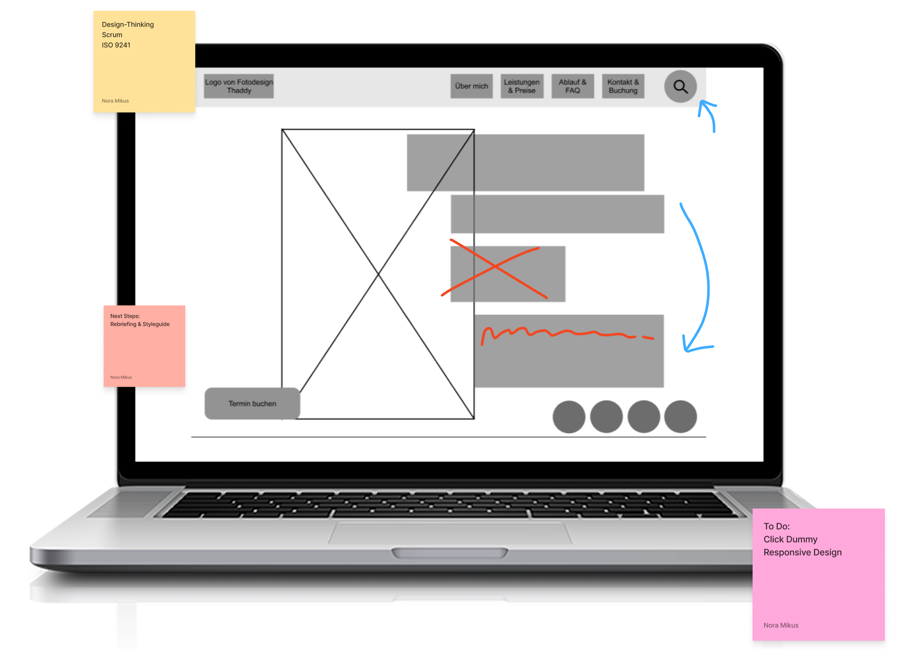
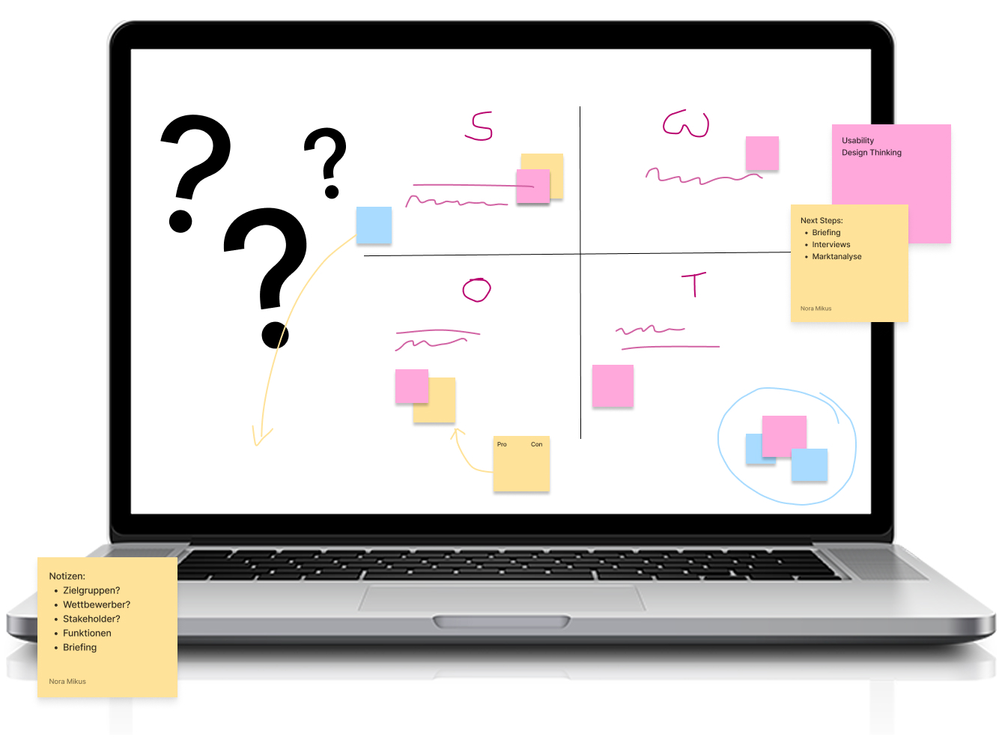
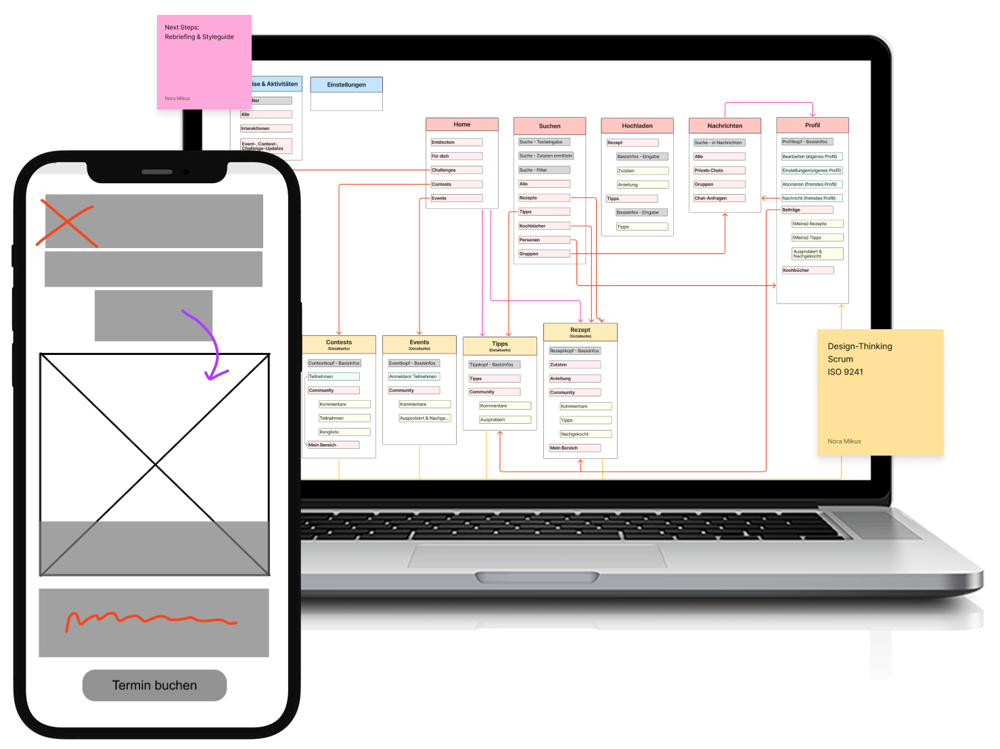
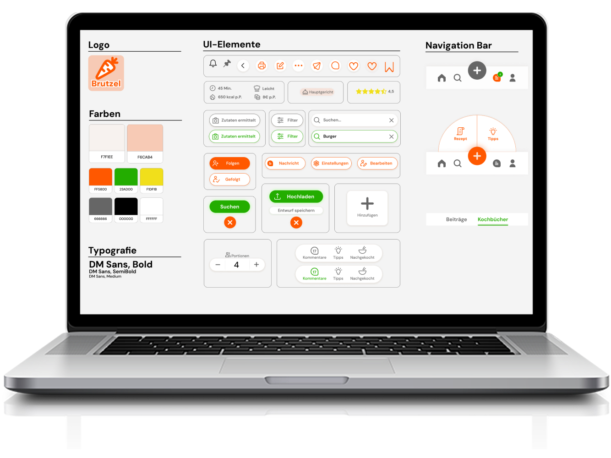
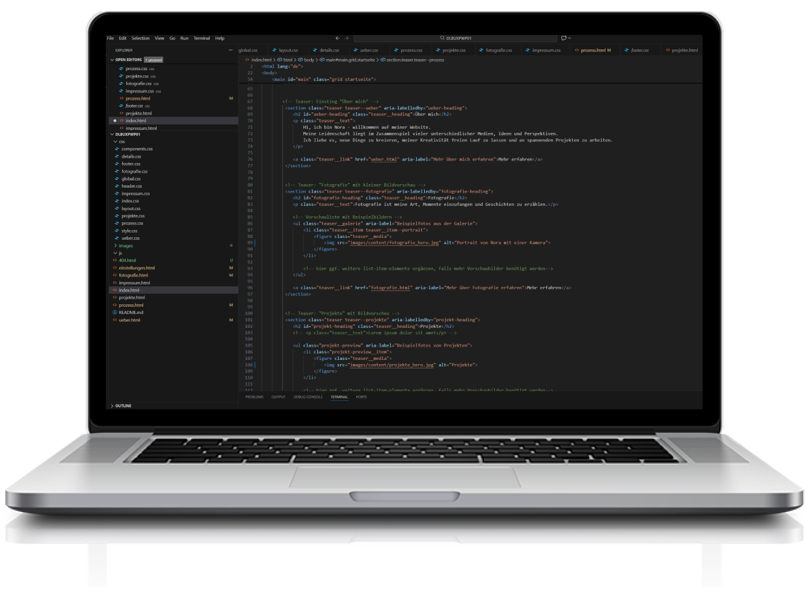

In meinen Projekten folge ich einem klar strukturierten Prozess.
Die klare Struktur hilft mir dabei, Anforderungen zu verstehen, fundierte Entscheidungen zu treffen und Lösungen zu entwickeln, die sowohl gestalterisch als auch funktional überzeugen.
Die einzelnen Schritte bauen aufeinander auf und sorgen für Transparenz und Nachvollziehbarkeit im gesamten Projektverlauf.

Prozessschritte
Recherche und Analyse
Im ersten Schritt steht die Analyse und Festlegung des Nutzungskontexts im Fokus.
Ziel ist es, die Zielgruppe, ihre Bedürfnisse und Nutzungssituationen genau zu verstehen.
Dazu gehören unter anderem Zielgruppenanalysen, Wettbewerbsanalysen sowie Briefinggespräche mit Stakeholdern und Auftraggebern.
Diese Phase schafft eine fundierte Grundlage für alle weiteren konzeptionellen und gestalterischen Entscheidungen.

Konzeption
Auf Grundlage der Analyse werden im zweiten Schritt konkrete Konzepte entwickelt.
Inhalte, Funktionen und Abläufe werden strukturiert definiert und sinnvoll angeordnet.
Mithilfe von Konzeptskizzen, Sitemaps, User Flows und ersten Wireframes entsteht ein klarer Überblick über den Aufbau und die Funktionsweise des Projekts.
Ziel ist es, eine nachvollziehbare und tragfähige Struktur zu schaffen, die als Basis für das spätere Design dient.

Design
Im Design werden die konzeptionellen Ideen visuell ausgearbeitet.
Ziel ist es, ein stimmiges Erscheinungsbild zu entwickeln, das zur Zielgruppe passt und die Inhalte klar und verständlich vermittelt.
Dazu gehören die Gestaltung von Layouts, Farb- und Typografiekonzepten sowie UI Elementen.
Mockups und Styleguides helfen dabei, das Design konsistent umzusetzen und frühzeitig erlebbar zu machen.

Umsetzung
In der Umsetzungsphase werden die entwickelten Konzepte und Designs konkret realisiert.
Dazu gehören die Ausarbeitung von Inhalten, Layouts und Interaktionen ebenso wie die technische Umsetzung und Programmierung.
Je nach Projekt entstehen funktionale Prototypen oder erste produktionsnahe Lösungen, die das geplante Produkt realistisch abbilden und testbar machen.

Evaluation
In der Evaluationsphase wird geprüft, wie gut die Lösung in der Praxis funktioniert.
Dazu gehören Usability Tests, Feedback von Nutzerinnen und Nutzern sowie die Analyse von Nutzung und Interaktionen.
Ziel ist es, Stärken und Schwachstellen frühzeitig zu erkennen, Annahmen zu überprüfen und auf dieser Basis gezielte Verbesserungen abzuleiten.
Dieser Schritt stellt sicher, dass das Ergebnis nicht nur technisch funktioniert, sondern auch den Bedürfnissen der Zielgruppe entspricht.